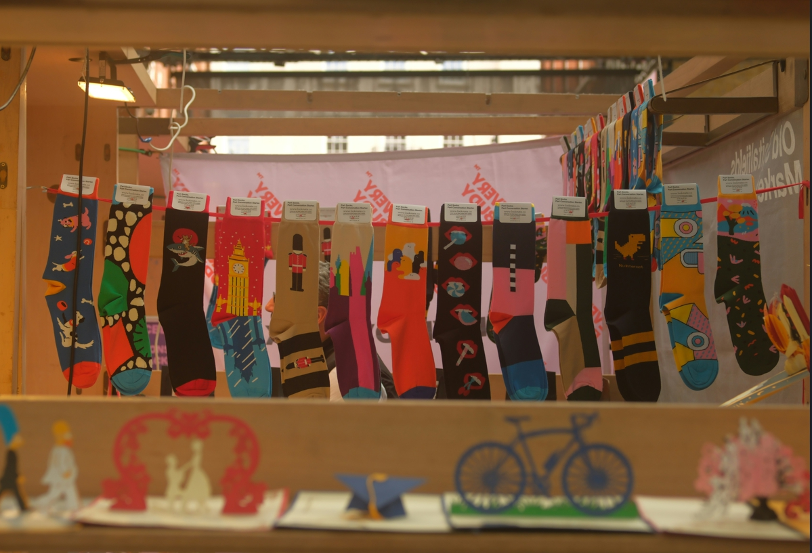
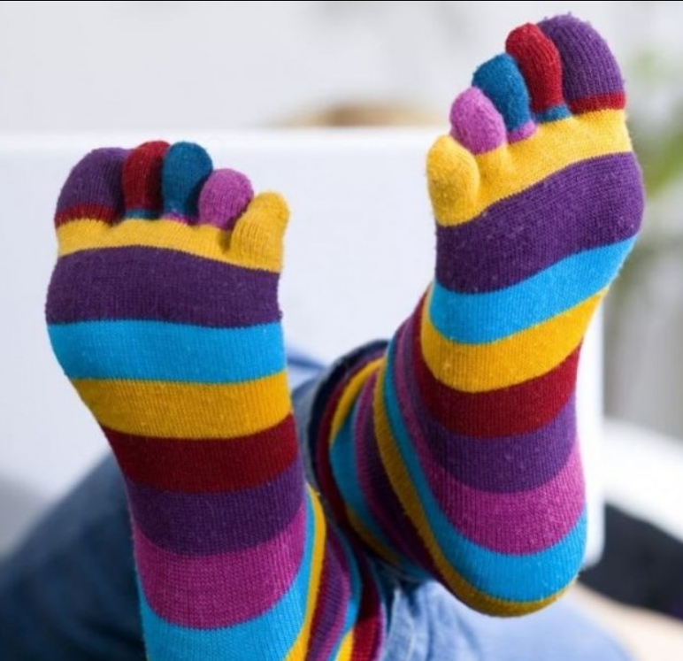
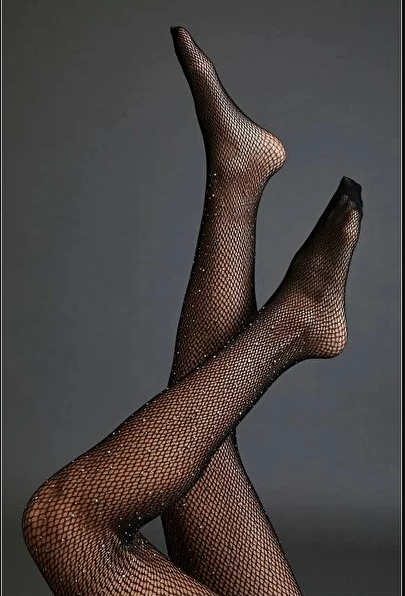
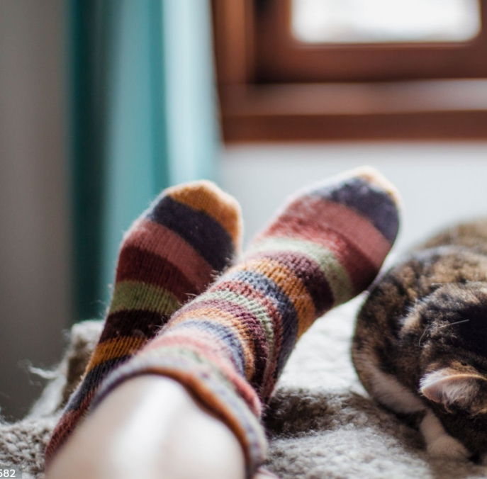

Çocuk & Bebek
Minik adımlar için organik kumaşlardan, rengarenk ve sevimli tasarımlar.
Çekmecenizdeki en sıkıcı detayı, gününüzün en havalı parçasına dönüştürüyoruz! Doğal ipliklerin sıcaklığını, sınır tanımayan tasarımlarla buluşturarak kendi ritminizi bulduruyoruz👣✨
Adımlarınız Kepi ile konuşsun!

Minik adımlar için organik kumaşlardan, rengarenk ve sevimli tasarımlar.

Kulaklı, kanatlı ve eğlenceli karakterler.

Simli, şık ve hediye etmeye hazır tasarımlar.

%100 Bambu ve sıcacık yün seçenekler.
Sıradan çoraplardan sıkıldık ve her adımda tebessüm ettirecek tasarımlar üretmek için yola çıktık. Kepi, sadece ayaklarınızı sıcak tutmakla kalmaz, kalitenin ve eğlencenin mükemmel uyumunu sunar.